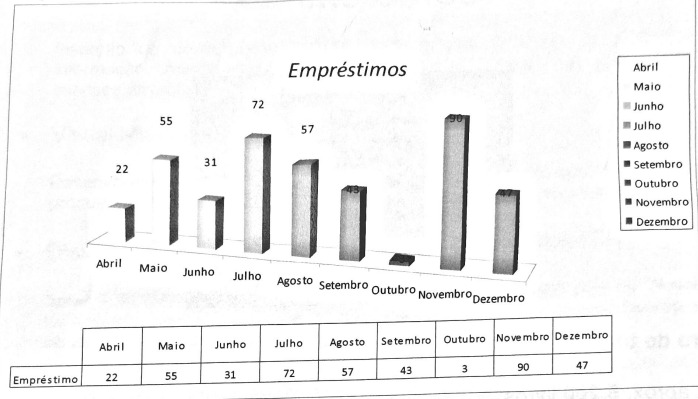

Voltar
Voltar
Biblioteca da Etec Sebrae: Conheça sua história
A biblioteca se situava na Rua José Getúlio, 89, no terceiro andar. A estrutura da biblioteca era composta por sala de leitura ampla, anexa à biblioteca, terminais de pesquisa e mesa para visualização de vídeo (VHS e TV). O acervo era composto por doze estantes de livros e onze estantes de DVD's. Havia também o acervo de VHS e revistas na sala ao lado no terceiro andar.

O software utilizado pela biblioteca era o Thesaurus (antigo programa desenvolvido pela Viappia, hoje substituído pelo Chronus Web).
Mudanças
A biblioteca do SEBRAE-SP foi transferida da Rua José Getúlio, 89 para o E.R. Centro, na Rua Vergueiro, 1071, durante todo o mês de outubro de 2011.
Como a biblioteca é?

Número de títulos cadastrados no acervo
Livros: aprox. 5.200 livros. Acervo especializado na área empresarial que contribui com o aprendizado, auxiliando, desenvolvendo e consolidando a força empreendedora, colaborando assim para a implantação, estruturação e desenvolvimento dos pequenos negócios.
DVD: 800 títulos
Sistema de Gerenciamento da Biblioteca
Chronus OPAC: Plataforma de gerenciamento de bibliotecas desenvolvida pela Viappia em parceria com o SEBRAE Nacional.
- O projeto Biblioteca Interativa SEBRAE (BIS) propõe um novo CDI, que não se restringe aos processos tradicionais de biblioteca.
- Site do projeto BIS
- Cine empreendedor: Sessão de cinema para pequenos e microempreendedores com projeção de filmes temáticos.
- Acervo Digital/E-book: Inserção de novo suporte digital para ampliar o acesso à informação.
- Visual Marketing: Desenvolvimento de identidade visual e criação de produtos como marca páginas.
- Disseminação Seletiva de Periódicos / Clipping / RSS: Serviço de informação em conjunto com os "Novos Canais" do Sebrae.
- Assinatura de periódicos: Revistas impressas e eletrônicas para colaboradores do SEBRAE-SP.
Bibliotecário
Felipe Pereira Alexandrino dos Santos – Bacharel em Biblioteconomia e Ciência da Informação pela FESP. Pós-Graduando em Gestão de Patrimônio e Cultura pela UNIFAI.
Sistema de Classificação dos Materiais
CDU (Classificação Decimal Universal)
Número de empréstimos (2011)
Empréstimo de material (2011)
Serviços oferecidos pelo CDI
- Catálogo online do acervo da biblioteca do CDI SEBRAE-SP, com mais de cinco mil livros sobre empreendedorismo.
- Informes de novos livros (Recém Chegados) disponibilizados periodicamente na Intranet (Publica Web).
Como foi...
A biblioteca do CDI SEBRAE-SP, nos anos passados, era composta por uma equipe de bibliotecários, gerenciados pelas profissionais Gláucia e Rúbia, com foco em atender candidatos a empreendedores, empreendedores formalizados e estudantes em geral.